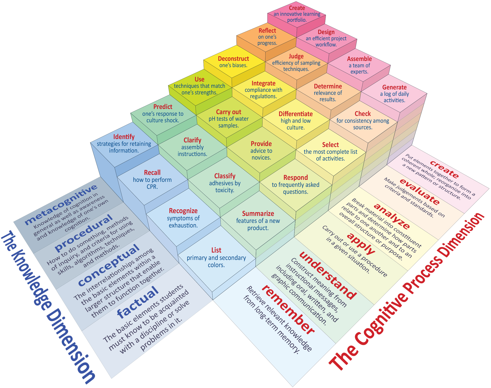
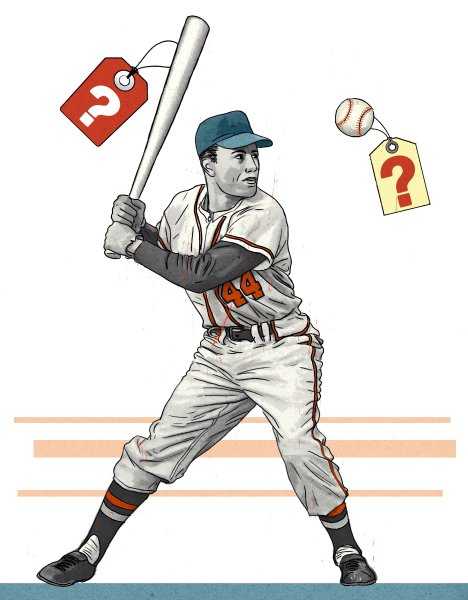
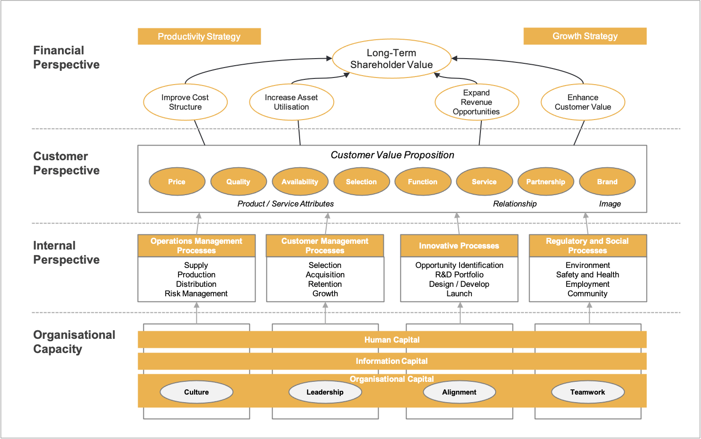

Strategisch Management | Werkcollege Week 2
Bedrijfskundig Denken
Agenda
Deel 1:
De Motor van het Denken
Deel 2:
De Lens van de Bedrijfskundige
Deel 1: De "Motor" van het Denken
Bloom's Taxonomy

"We trainen hier voor het vak, niet alleen voor de toets."
Wat is 'Strategie'?
(2 minuten)
Systeem 1 vs Systeem 2

Een raadsel...
Een knuppel en een bal kosten samen €1,10.
De knuppel kost
€1,- meer dan de bal.
Hoeveel kost de bal?

De bal kost
€0,05
Complexe vraagstukken vereisen de bewuste activatie van je
Systeem 2-denken.
Deel 2: De "Lens" van de Bedrijfskundige
De Strategy Map

De Functie van Modellen
Denken in Context

Groepsopdracht
Wat waren de externe (DESTEP) drijfveren?
Groep 1
BK 1.0
(Efficiëntie)
Groep 2
BK 2.0
(Menselijke Relaties)
Groep 3
BK 3.0
(IT & Strategie)
Groep 4
BK 4.0
(Digitale Transformatie)
Reflectie & Synthese
Waar op de tijdlijn past de Strategy Map?
Hoe 'updaten' we het model voor vandaag met
6 Capitals & Agile?
Bedrijfskundig Denken
= Systeem 2 + Modellen + Context
Feedback & Afsluiting
Scan de QR-code